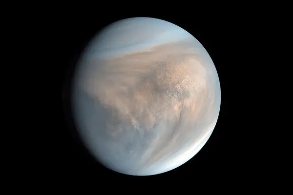

El sistema solar es el sistema planetario que liga gravitacionalmente a un conjunto de objetos astronómicos que giran directa o indirectamente en una órbita alrededor de una única estrella conocida con el nombre de Sol.

La estrella concentra el 99,86% de la masa del sistema solar, y la mayor parte de la masa restante se concentra en ocho planetas cuya órbitas son prácticamente circulares y transitan dentro de un disco casi llano llamado plano eclíptico. Los cuatro planetas más cercanos, considerablemente más pequeños Mercurio, Venus, Tierra y Marte, tambien conocidos como planetas terrestres, están compuestos principalmente por roca y metal. Mientras que los cuatro más alejados, denominados gigantes gaseosos o "planetas jovianos", más masivos que los terrestres, están compuestos de hielo y gases. Los dos más grandes, Júpiter y Saturno, están compuestos principalmente de helio e hidrógeno. Urano y Neptuno, denominados gigantes helados, están formados mayoritariamente por agua congelada, amoniaco y metano.

Los objetos que forman el sistema solar son:
En la siguiente tabla podemos comparar los tamaños y la distancia al Sol de cada planeta
| Planeta | Diámetro ecuatorial(km) | Radio orbital(UA) |
|---|---|---|
| Mercurio | 4878 | 0,39 |
| Venus | 12100 | 0,72 |
| Tierra | 12756 | 1,00 |
| Marte | 6787 | 1,52 |
| Júpiter | 142984 | 5,20 |
| Saturno | 120536 | 9,54 |
| Urano | 51108 | 19,19 |
| Neptuno | 49538 | 30,06 |
| Plutón | 2370 | 39,482 |